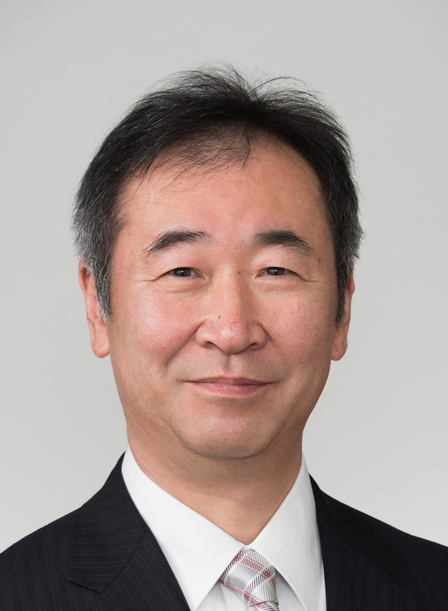

「夢のたまご塾」飛騨アカデミー実行委員会（「ゆめたま」）
〒506-1195 岐阜県飛騨市神岡町東町378 神岡振興事務所４Ｆ
ＴＥＬ／ＦＡＸ：０５７８‐８２‐４０２０（電話は平日の午前中のみ）
Ｅ-ｍａｉｌ： hida-academy★sunny.ocn.ne.jp
メールを送られる方は★を@に変えてください
梶田隆章さん
|
『スーパーカミオカンデでニュートリノをしらべる』 東京大学宇宙線研究所 所長 略歴： 昭和52年3月 埼玉県立川越高校卒業 昭和56年3月埼玉大学理学部卒業 昭和58年3月東京大学大学院理学系研究科物理学専門課程修士課程修了 |